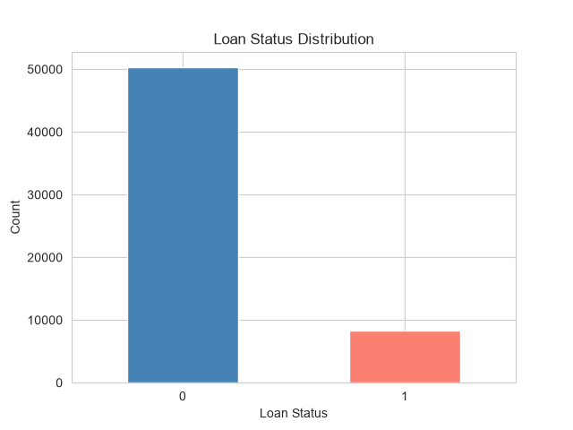
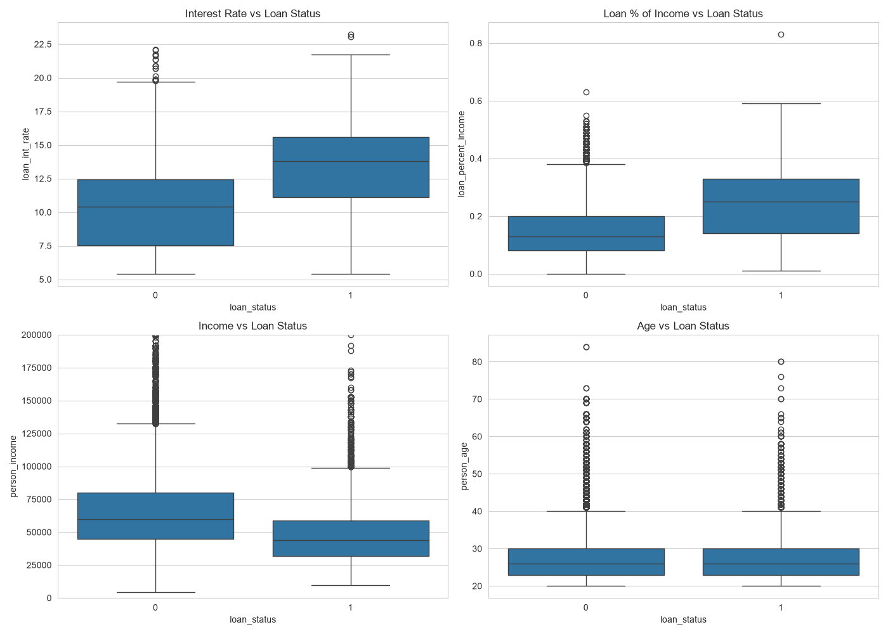
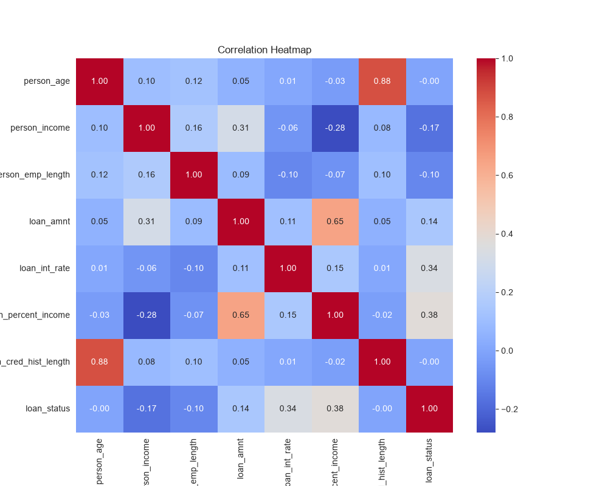
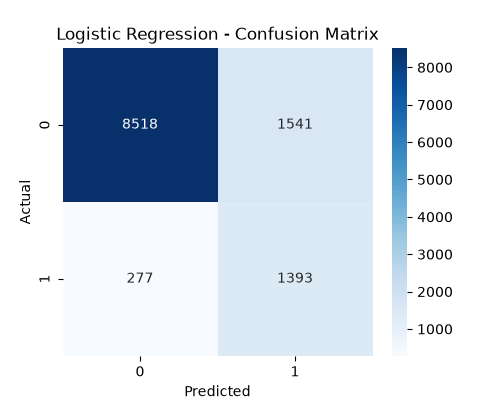
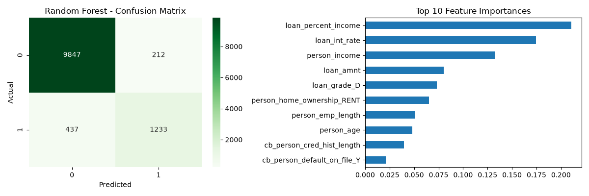
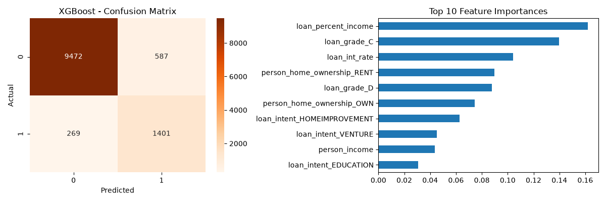
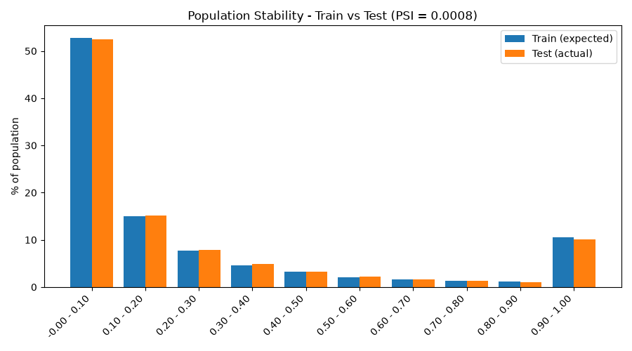
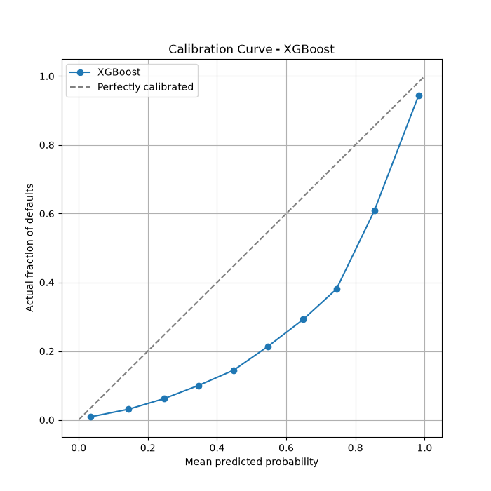

Four models were built and validated on the same held-out 20% sample. All four rank risk well. The recommendation is to deploy the WOE/IV credit scorecard for applicant-facing decisions and retain XGBoost as a challenger and portfolio-monitoring tool. Three things need to be flagged before anything goes live:
This model estimates the Probability of Default (PD) for loan applicants, using historical loan data to identify which applicant and loan characteristics are associated with higher default risk. The intended uses are (a) an application decision rule with an explainable score, (b) risk-based segmentation of the existing book, and (c) a monitoring baseline against which future applicant populations can be compared.
Four modelling approaches were compared: a points-based credit scorecard built on Weight of Evidence / Information Value (WOE/IV) methodology, and three benchmark machine-learning models — Logistic Regression, Random Forest and XGBoost.
The development sample is 58,645 historical loan applications with 12 predictive attributes and a binary default outcome. There are no missing values and no duplicate rows. A further 39,098 applications form a scoring (test) set with no outcome labels, used for population-stability testing.
| Portfolio characteristic | Value | Note |
|---|---|---|
| Applications | 58,645 | Development sample |
| Defaults | 8,350 | 14.24% of the book |
| Non-defaults | 50,295 | 85.76% |
| Total principal advanced | $540,563,602 | Sum of loan amounts |
| Principal on defaulted loans | $93,497,220 | 17.3% of principal — ahead of the 14.24% unit rate |
| Average loan — defaulted | $11,197 | Defaulters borrow ~26% more than non-defaulters |
| Average loan — performing | $8,889 | |
| Loan size range | $500 – $35,000 | Mean $9,218 |
| Applicant income (median) | $58,000 | Range $4,200 – $1,900,000 |
| Applicant age (median) | 26 | Range 20 – 84; a young book |
Read-across: defaulted loans account for 17.3% of principal but only 14.24% of accounts. Loss severity therefore runs ahead of loss frequency — larger loans default more often. Any cut-off policy built on this model should be evaluated on dollars at risk, not just on the count of applications declined.

Three records carried sentinel values of 123: one in person_age and two in
person_emp_length (i.e. 123 years old, 123 years of employment). These were corrected by median imputation,
with the medians computed on the training data and the same values applied to the test set to avoid leakage. The scoring
set contained no such values. After cleaning, no record shows employment length greater than or equal to the applicant's age.
Note: the original draft recorded this as "two erroneous data entries". The accurate count is three records across two fields. The correction is immaterial to any result but is stated here for the audit trail.
Information Value (IV) measures how much each attribute separates defaulters from non-defaulters. The conventional reading is: below 0.02 useless, 0.02–0.1 weak, 0.1–0.3 medium, 0.3–0.5 strong, above 0.5 suspiciously strong and worth checking for leakage.
| Rank | Attribute | Information Value | Strength |
|---|---|---|---|
| 1 | Loan grade | 1.2409 | Very strong |
| 2 | Loan interest rate | 0.9272 | Very strong |
| 3 | Loan as % of income | 0.7705 | Very strong |
| 4 | Home ownership | 0.6009 | Strong |
| 5 | Applicant income | 0.4981 | Strong |
| 6 | Prior default on file | 0.2258 | Medium |
| 7 | Employment length | 0.1140 | Medium |
| 8 | Loan intent | 0.0951 | Weak |
| 9 | Applicant age | 0.0037 | No predictive value |
| 10 | Credit history length | 0.0036 | No predictive value |
| Grade | Loans | % of book | Defaults | % of all defaults | Default rate |
|---|---|---|---|---|---|
| A | 20,984 | 35.8% | 1,032 | 12.4% | 4.9% |
| B | 20,400 | 34.8% | 2,087 | 25.0% | 10.2% |
| C | 11,036 | 18.8% | 1,494 | 17.9% | 13.5% |
| D | 5,034 | 8.6% | 2,988 | 35.8% | 59.4% |
| E | 1,009 | 1.7% | 631 | 7.6% | 62.5% |
| F | 149 | 0.3% | 91 | 1.1% | 61.1% |
| G | 33 | 0.1% | 27 | 0.3% | 81.8% |
| All | 58,645 | 100% | 8,350 | 100% | 14.24% |
The headline in the original draft — Grade A at 4.9% against Grade G at 81.8% — is correct but understates the more useful finding. The risk does not climb smoothly across grades. It steps: A 4.9% → B 10.2% → C 13.5%, and then jumps to D 59.4%. Grades D through G behave as a single high-risk pool at roughly 60–80%, while A through C form a low-risk pool under 14%.
Concentration: grades D–G are 10.6% of the book but 44.8% of all defaults, at a blended 60.0% default rate. Grades A–B are 70.6% of the book and 37.4% of defaults at a 7.5% rate. Practically, the C/D boundary is where the portfolio's risk actually lives, and that is where cut-off policy should be argued.
| Home ownership | Loans | % of book | % of all defaults | Default rate |
|---|---|---|---|---|
| Rent | 30,594 | 52.2% | 81.5% | 22.3% |
| Other | 89 | 0.2% | 0.2% | 16.9% |
| Mortgage | 24,824 | 42.3% | 17.8% | 6.0% |
| Own outright | 3,138 | 5.4% | 0.5% | 1.4% |
Renters are 52.2% of the book but carry 81.5% of every default in the portfolio. Owners — 5.4% of the book — account for 0.5%. A 16× spread in default rate between renters and outright owners is doing a lot of work here, and it is almost certainly acting as a proxy for accumulated wealth and housing-cost stability rather than for anything causal about tenure. That is worth stating plainly because it has fair-lending implications (see Section 7).
This is the finding I would most want to put in front of underwriting, and it is not in the original draft. Loan-to-income does not degrade gradually — it breaks.
| Loan as % of income | Loans | % of book | Default rate |
|---|---|---|---|
| Under 10% | 19,405 | 33.1% | 6.7% |
| 10 – 20% | 23,767 | 40.5% | 9.2% |
| 20 – 30% | 10,743 | 18.3% | 14.7% |
| 30 – 40% | 3,844 | 6.6% | 68.2% |
| 40% and above | 886 | 1.5% | 76.2% |
Default risk runs 6.7% → 9.2% → 14.7% and then leaps to 68.2% the moment the loan passes 30% of income. That is a 4.6× step across a single band boundary. The same shape appears in interest rate — 14.0% default below a 14% rate, 43.8% above it — and in loan grade at the C/D boundary.


On its own, a prior default on file looks informative: 29.9% default rate against 11.5% for clean files, IV 0.2258. Cross-tabulated against grade, it collapses.
| Grade | No prior default — loans | rate | Prior default — loans | rate | Difference |
|---|---|---|---|---|---|
| A | 20,980 | 4.9% | 4 | 0.0% | no population |
| B | 20,394 | 10.2% | 6 | 0.0% | no population |
| C | 5,523 | 14.0% | 5,513 | 13.1% | none |
| D | 2,461 | 60.6% | 2,573 | 58.2% | none |
| E | 502 | 63.1% | 507 | 61.9% | none |
| F | 68 | 55.9% | 81 | 65.4% | small sample |
| G | 15 | 80.0% | 18 | 83.3% | small sample |
Within grades C, D and E — the only grades with meaningful numbers on both sides — applicants with a prior default actually perform marginally better than those without. Grades A and B contain 10 flagged applicants between them out of 41,384. The flag's apparent power is entirely an artefact of its correlation with grade: it is a grade proxy, not independent information. The scorecard's fitting process reaches the same conclusion on its own, assigning it a coefficient of 0.0304 — effectively zero.
All four models were validated on the same stratified held-out 20% sample (11,729 applications, 1,670 actual defaults, 14.24% default rate — identical to the full book). The scorecard was re-fitted for this comparison with its WOE bins derived from the training portion only, so that no model sees the validation data during fitting.
| Model | Accuracy | Precision | Recall | F1 | ROC-AUC | Gini | KS | Brier |
|---|---|---|---|---|---|---|---|---|
| “Approve everyone” baseline | 85.76% | – | 0.0% | – | 0.500 | 0.000 | 0.000 | – |
| Credit Scorecard (WOE/IV) | 83.14% | 44.98% | 82.63% | 0.583 | 0.8966 | 0.793 | 0.670 | 0.126 |
| Logistic Regression | 84.50% | 47.48% | 83.41% | 0.605 | 0.9068 | 0.814 | 0.692 | 0.116 |
| Random Forest | 94.47% | 85.33% | 73.83% | 0.792 | 0.9363 | 0.873 | 0.731 | 0.044 |
| XGBoost | 92.70% | 70.47% | 83.89% | 0.766 | 0.9554 | 0.911 | 0.785 | 0.058 |
On a 14.24% default rate, a model that simply approves every applicant scores 85.76% accuracy. That beats both the Logistic Regression (84.50%) and the scorecard (83.14%) — despite catching precisely zero defaults and having no predictive content whatsoever. The reason those two models score below the do-nothing baseline is that both are fitted with balanced class weights, which deliberately trades false positives for catching more defaults: the scorecard declines ~26% of applicants to capture 82.6% of defaults. That is usually the right trade for a lender, but it shows up as worse "accuracy". ROC-AUC, Gini and KS are the metrics to judge these models on, since they measure ranking quality independent of where the approve/decline threshold is set.



Random Forest has the higher accuracy (94.47% vs 92.70%), but that comparison favours the wrong model for lending. Set against each other on the same 11,729 applications:
| Random Forest | XGBoost | Implication | |
|---|---|---|---|
| Defaults caught | 1,233 | 1,401 | XGBoost catches 168 more |
| Defaults missed | 437 | 269 | Each one is a full credit loss |
| Good applicants wrongly flagged | 212 | 587 | Each one is forgone margin |
| ROC-AUC | 0.9363 | 0.9554 | XGBoost ranks better overall |
XGBoost converts 375 additional false alarms into 168 additional defaults caught. At an average defaulted loan of $11,197 against the margin forgone on a declined good applicant, that trade is comfortably positive for almost any plausible loss-given-default assumption. Random Forest's accuracy advantage comes from being too permissive on the class that actually costs money.
The scorecard scales to a base of 600 points with 20 points to double the odds — standard scaling conventions. Observed scores on the validation set run from 424 to 763, median 640. Every point value is traceable to a single attribute band, which is what makes the model explainable to an applicant or a regulator.
| Attribute | Band | Points | Attribute | Band | Points |
|---|---|---|---|---|---|
| Home ownership | Own outright | +50.9 | Loan grade | A | +34.2 |
| Mortgage | +19.8 | B | +11.0 | ||
| Other | −4.6 | C | +1.7 | ||
| Rent | −11.2 | D | −63.9 | ||
| Loan as % of income | Up to 8% | +25.4 | E | −67.8 | |
| 8 – 12% | +21.1 | F | −65.9 | ||
| 12 – 17% | +15.5 | G | −95.1 | ||
| 17 – 23% | +6.2 | Income | Above $83,119 | +23.9 | |
| Above 23% | −38.5 | Below $39,480 | −18.0 |
Base score 603 for every applicant, then add or subtract the bands that apply.
Applicant A: Grade A (+34.2), owns outright (+50.9), income $95k (+23.9), borrowing 6% of income (+25.4), rate 7.0% (+5.6), 8 years employed (+2.6), venture purpose (+16.6), age 29 (+0.5), clean file (−0.2) → score 762, top band, observed default rate 1.67%.
Applicant B: Grade D (−63.9), renting (−11.2), income $35k (−18.0), borrowing 30% of income (−38.5), rate 15.0% (−6.0), 6 months employed (−2.4), debt consolidation (−11.7), age 22 (−0.4), prior default (+0.8) → score 451, bottom band, observed default rate 90.16%. The decline letter writes itself: grade, affordability and tenure account for −114 of the −152 point gap.
Two scorecard variables carry the wrong sign. Prior default on file scores +0.8 points for having defaulted before and −0.2 for a clean file; credit history length is similarly inverted. Both are numerically trivial (under one point, against a 339-point observed score range) because the fitting correctly drove their coefficients towards zero — for the reason shown in Section 3.4 — so no live decision would turn on them. But a model reviewer or regulator will flag a scorecard that rewards a prior default, and they would be right to. Recommendation: drop applicant age, credit history length and prior default on file from the scorecard entirely. Their combined IV is 0.23, almost all of it redundant with loan grade, and removing them eliminates the sign problem at no measurable cost to performance.
PSI compares the score distribution the model was trained on against the distribution it is now being applied to. The standard reading is: below 0.10 no meaningful shift, 0.10–0.25 moderate shift worth investigating, above 0.25 significant shift and the model should be reviewed for retraining.

Caveat on how much comfort to take from this. Train and test here are two random splits of one historical extract, not two periods of time. A PSI this low confirms the split was clean; it says nothing about how the applicant population will drift over the coming quarters. The real stability test is PSI measured month-on-month against live applications once the model is deployed, and that monitoring should be stood up from day one.

| Predicted PD | Actual default rate | Gap | Reading |
|---|---|---|---|
| 0.035 | 0.009 | +0.026 | ~4× over |
| 0.145 | 0.031 | +0.114 | ~4.7× over |
| 0.247 | 0.062 | +0.185 | ~4× over |
| 0.346 | 0.100 | +0.246 | ~3.5× over |
| 0.448 | 0.145 | +0.304 | ~3× over |
| 0.547 | 0.214 | +0.333 | largest absolute gap |
| 0.649 | 0.292 | +0.357 | largest absolute gap |
| 0.745 | 0.380 | +0.365 | largest absolute gap |
| 0.855 | 0.608 | +0.246 | ~1.4× over |
| 0.982 | 0.943 | +0.039 | close |
This is the most consequential finding in the validation section. An applicant scored at a 0.55 probability of
default actually defaults 21% of the time. The cause is not a modelling error — it is the deliberate use of
scale_pos_weight and class_weight="balanced", which re-weight the minority class during fitting and
inflate every predicted probability as a side effect. The same distortion applies to all four models; the Brier scores in
Section 4 (0.126 for the scorecard, 0.116 for Logistic Regression) reflect it.
What this means in practice: these outputs are ranking scores, not probabilities. They are valid for ordering applicants, setting cut-offs and building risk bands — all of which Section 5.3 does. They are not valid as PD inputs to expected-loss calculations, IFRS 9 / CECL provisioning, risk-based pricing, or capital models, where an over-statement of 3× would be material. Before any such use, the model needs recalibration — isotonic regression or Platt scaling fitted on a held-out sample is the standard remedy and is a small piece of work.
The scorecard's practical value is that it sorts the book into bands whose observed default rates are far apart. On the validation set:
| Score band | Applicants | % of portfolio | Defaults | Observed default rate |
|---|---|---|---|---|
| Below 500 — high risk | 244 | 2.1% | 220 | 90.16% |
| 500 – 550 | 804 | 6.9% | 524 | 65.17% |
| 550 – 600 | 1,902 | 16.2% | 630 | 33.12% |
| 600 – 650 | 3,918 | 33.4% | 215 | 5.49% |
| 650 and above — low risk | 4,861 | 41.4% | 81 | 1.67% |
A 54× spread between the top and bottom bands, with 75% of the portfolio sitting in the two lowest-risk bands. Translating that into a decision rule:
| Cut-off | Approval rate | Default rate of approved book | Defaults avoided | Good loans declined | Defaulting principal avoided |
|---|---|---|---|---|---|
| No cut-off | 100.0% | 14.24% | 0 | 0 | $0 |
| 500 | 97.9% | 12.63% | 220 | 24 | $3.2M |
| 550 | 91.1% | 8.67% | 744 | 304 | $8.3M |
| 575 | 84.4% | 5.55% | 1,121 | 714 | $13.0M |
| 600 | 74.8% | 3.37% | 1,374 | 1,576 | $16.2M |
| 620 | 63.3% | 2.49% | 1,485 | 2,820 | $17.3M |
| 650 | 41.4% | 1.67% | 1,589 | 5,279 | $18.2M |
Recommended operating range: a cut-off between 575 and 600. At 575 the lender declines 15.6% of applications, cuts the default rate of the approved book from 14.24% to 5.55%, avoids 67% of all defaults and $13.0M of defaulting principal, and turns away 714 good applicants. At 600 the default rate falls further to 3.37% but the cost of good business declined more than doubles to 1,576. Above 620 the curve flattens hard — each additional default avoided costs progressively more good customers, and by 650 the lender is declining 5,279 good applicants to avoid 215 more defaults. Which point in that range is right is a commercial decision about risk appetite, not a modelling one, and it should be set with the pricing team against actual margin and loss-given-default assumptions.
person_age and two person_emp_length values of 123 were
median-imputed. Immaterial at this sample size, but the presence of sentinel values suggests the upstream data feed has no
range validation, which is worth raising with data engineering.